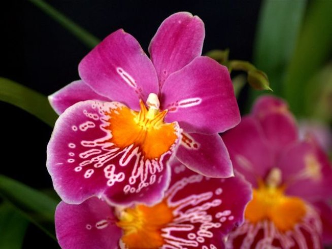

Милтония
Милтония (Miltonia) е орхидея с големи, ярко оцветени цветя, които наподобяват лицето на човек, често наричана "лицева орхидея". Цветовете могат да бъдат в розови, лилави, жълти и бели нюанси с контрастни петна.
Как да я отглеждаме:- Светлина: Ярка, разсеяна светлина, без пряка слънчева светлина.
- Температура: 18-24°C през деня и 15-18°C през нощта. Избягвайте студени температури под 12°C.
- Поливане: Поливайте редовно, когато субстратът изсъхне. През зимата намалете поливането.
- Влажност: 60-70%. Използвайте овлажнител или поднос с вода.
- Подхранване: Течен тор за орхидеи, веднъж на 2 седмици през активния растеж.
- Пресаждане: Пресаждайте на всеки 2-3 години с лек дренажен субстрат.
Цъфти през зимата или пролетта, като цветята продължават да цъфтят около 1-2 месеца.
Милтонията е елегантна орхидея, която ще ви радва с красивите си цветя, ако й осигурите подходящи условия.
